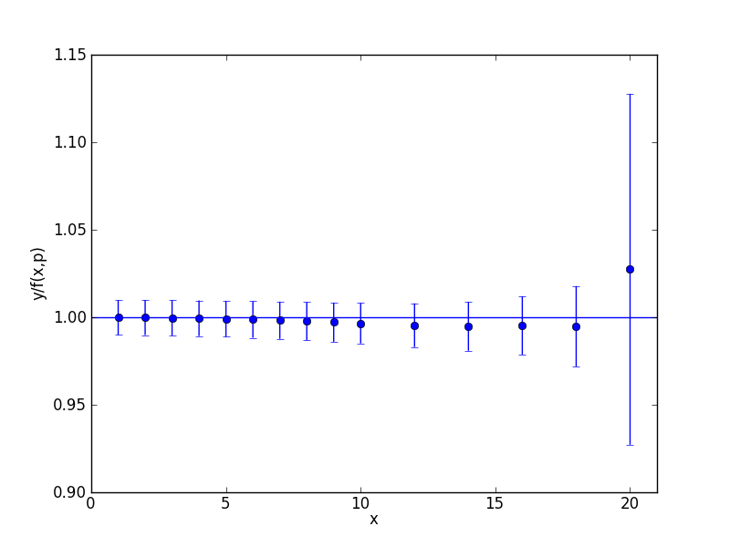
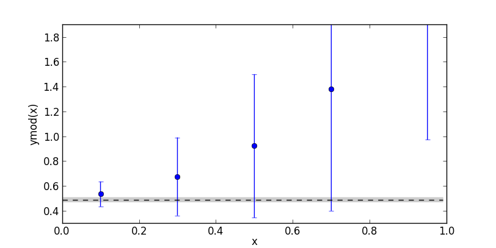

Overview and Tutorial¶
Introduction¶
The modules defined here are designed to facilitate least-squares fitting of noisy data by multi-dimensional, nonlinear functions of arbitrarily many parameters. The central module is lsqfit because it provides the fitting functions. lsqfit makes heavy use of auxiliary module gvar, which provides tools that simplify the analysis of error propagation, and also the creation of complicated multi-dimensional Gaussian distributions. The power of the gvar module is a feature that distinguishes lsqfit from standard fitting packages, as demonstrated below.
The following (complete) code illustrates basic usage of lsqfit:
import numpy as np
import gvar as gv
import lsqfit
y = { # data for the dependent variable
'data1' : gv.gvar([1.376, 2.010], [[ 0.0047, 0.01], [ 0.01, 0.056]]),
'data2' : gv.gvar([1.329, 1.582], [[ 0.0047, 0.0067], [0.0067, 0.0136]]),
'b/a' : gv.gvar(2.0, 0.5)
}
x = { # independent variable
'data1' : np.array([0.1, 1.0]),
'data2' : np.array([0.1, 0.5])
}
prior = dict(a=gv.gvar(0.5, 0.5), b=gv.gvar(0.5, 0.5))
def fcn(x, p): # fit function of x and parameters p
ans = {}
for k in ['data1', 'data2']:
ans[k] = gv.exp(p['a'] + x[k] * p['b'])
ans['b/a'] = p['b'] / p['a']
return ans
# do the fit
fit = lsqfit.nonlinear_fit(data=(x, y), prior=prior, fcn=fcn)
print(fit.format(maxline=True)) # print standard summary of fit
p = fit.p # best-fit values for parameters
outputs = dict(a=p['a'], b=p['b'])
outputs['b/a'] = p['b']/p['a']
inputs = dict(y=y, prior=prior)
print(gv.fmt_values(outputs)) # tabulate outputs
print(gv.fmt_errorbudget(outputs, inputs)) # print error budget for outputs
This code fits the function f(x,a,b)= exp(a+b*x) (see fcn(x,p)) to two sets of data, labeled data1 and data2, by varying parameters a and b until f(x['data1'],a,b) and f(x['data2'],a,b) equal y['data1'] and y['data2'], respectively, to within the ys’ errors. The means and covariance matrices for the ys are specified in the gv.gvar(...)s used to create them: for example,
>>> print(y['data1'])
[1.376(69) 2.01(24)]
>>> print(y['data1'][0].mean, "+-", y['data1'][0].sdev)
1.376 +- 0.068556546004
>>> print(gv.evalcov(y['data1'])) # covariance matrix
[[ 0.0047 0.01 ]
[ 0.01 0.056 ]]
shows the means, standard deviations and covariance matrix for the data in the first data set (0.0685565 is the square root of the 0.0047 in the covariance matrix). The dictionary prior gives a priori estimates for the two parameters, a and b: each is assumed to be 0.5±0.5 before fitting. The parameters p[k] in the fit function fcn(x, p) are stored in a dictionary having the same keys and layout as prior (since prior specifies the fit parameters for the fitter). In addition, there is an extra piece of input data, y['b/a'], which indicates that b/a is 2±0.5. The fit function for this data is simply the ratio b/a (represented by p['b']/p['a'] in fit function fcn(x,p)). The fit function returns a dictionary having the same keys and layout as the input data y.
The output from the code sample above is:
Least Square Fit:
chi2/dof [dof] = 0.17 [5] Q = 0.97 logGBF = 0.65538
Parameters:
a 0.253 (32) [ 0.50 (50) ]
b 0.449 (65) [ 0.50 (50) ]
Fit:
key y[key] f(p)[key]
---------------------------------------
b/a 2.00 (50) 1.78 (30)
data1 0 1.376 (69) 1.347 (46)
1 2.01 (24) 2.02 (16)
data2 0 1.329 (69) 1.347 (46)
1 1.58 (12) 1.612 (82)
Settings:
svdcut/n = 1e-15/0 reltol/abstol = 0.0001/0 (itns/time = 5/0.0)
Values:
a: 0.253(32)
b/a: 1.78(30)
b: 0.449(65)
Partial % Errors:
a b/a b
--------------------------------------------------
y: 12.75 16.72 14.30
prior: 0.92 1.58 1.88
--------------------------------------------------
total: 12.78 16.80 14.42
The best-fit values for a and b are 0.253(32) and 0.449(65), respectively; and the best-fit result for b/a is 1.78(30), which, because of correlations, is slightly more accurate than might be expected from the separate errors for a and b. The error budget for each of these three quantities is tabulated at the end and shows that the bulk of the error in each case comes from uncertainties in the y data, with only small contributions from uncertainties in the priors prior. The fit results corresponding to each piece of input data are also tabulated (Fit: ...); the agreement is excellent, as expected given that the chi**2 per degree of freedom is only 0.17.
Note that the constraint in y on b/a in this example is much tighter than the constraints on a and b separately. This suggests a variation on the previous code, where the tight restriction on b/a is built into the prior rather than y:
... as before ...
y = { # data for the dependent variable
'data1' : gv.gvar([1.376, 2.010], [[ 0.0047, 0.01], [ 0.01, 0.056]]),
'data2' : gv.gvar([1.329, 1.582], [[ 0.0047, 0.0067], [0.0067, 0.0136]])
}
x = { # independent variable
'data1' : np.array([0.1, 1.0]),
'data2' : np.array([0.1, 0.5])
}
prior = dict(a=gv.gvar(0.5, 0.5))
prior['b'] = prior['a'] * gv.gvar(2.0, 0.5)
def fcn(x, p): # fit function of x and parameters p[k]
ans = {}
for k in ['data1', 'data2']:
ans[k] = gv.exp(p['a'] + x[k]*p['b'])
return ans
... as before ...
Here the dependent data y no longer has an entry for b/a, and neither do results from the fit function; but the prior for b is now 2±0.5 times the prior for a, thereby introducing a correlation that limits the ratio b/a to be 2±0.5 in the fit. This code gives almost identical results to the first one — very slightly less accurate, since there is less input data. We can often move information from the y data to the prior or back since both are forms of input information.
There are several things worth noting from this example:
- The input data (y) is expressed in terms of Gaussian random variables — quantities with means and a covariance matrix. These are represented by objects of type gvar.GVar in the code; module gvar has a variety of tools for creating and manipulating Gaussian random variables (also see below).
- The input data is stored in a dictionary (y) whose values can be gvar.GVars or arrays of gvar.GVars. The use of a dictionary allows for far greater flexibility than, say, an array. The fit function (fcn(x, p)) has to return a dictionary with the same layout as that of y (that is, with the same keys and where the value for each key has the same shape as the corresponding value in y). lsqfit allows y to be an array instead of a dictionary, which might be preferable for very simple fits (but usually not otherwise).
- The independent data (x) can be anything; it is simply passed through the fit code to the fit function fcn(x,p). It can also be omitted altogether, in which case the fit function depends only upon the parameters: fcn(p).
- The fit parameters (p in fcn(x,p)) are also stored in a dictionary whose values are gvar.GVars or arrays of gvar.GVars. Again this allows for great flexibility. The layout of the parameter dictionary is copied from that of the prior (prior). Again p can be a single array instead of a dictionary, if that simplifies the code (which is usually not the case).
- The best-fit values of the fit parameters (fit.p[k]) are also gvar.GVars and these capture statistical correlations between different parameters that are indicated by the fit. These output parameters can be combined in arithmetic expressions, using standard operators and standard functions, to obtain derived quantities. These operations take account of and track statistical correlations.
- Function gvar.fmt_errorbudget() is a useful tool for assessing the origins (inputs) of the statistical errors obtained in various final results (outputs). It is particularly useful for analyzing the impact of the a priori uncertainties encoded in the prior (prior).
What follows is a brief tutorial that demonstrates in greater detail how to use these modules in some standard variations on the data fitting problem. As above, code for the examples is specified completely and so can be copied into a file, and run as is. It can also be modified, allowing for experimentation. At the very end, in an appendix, there is a very simple pedagogical example that illustrates the nature of priors and demonstrates some of the simpler techniques supported by lsqfit.
About Printing: The examples in this tutorial use the print function as it is used in Python 3. Drop the outermost parenthesis in each print statement if using Python 2; or add
from __future__ import print_function
at the start of your file.
Gaussian Random Variables and Error Propagation¶
The inputs and outputs of a nonlinear least squares analysis are probability distributions, and these distributions will be Gaussian provided the input data are sufficiently accurate. lsqfit assumes this to be the case. (It also provides tests for non-Gaussian behavior, together with methods for dealing with such behavior.) One of the most distinctive features of lsqfit is that it is built around a class, gvar.GVar, of objects that can be used to represent arbitrarily complicated Gaussian distributions — that is, Gaussian random variables that specify the means and covariance matrix of the probability distributions. The input data for a fit are represented by a collection of gvar.GVars that specify both the values and possible errors in the input values. The result of a fit is a collection of gvar.GVars specifying the best-fit values for the fit parameters and the estimated uncertainties in those values.
There are three important things to know about gvar.GVars, in addition to knowing how to create them (see Creating Gaussian Variables):
gvar.GVars describe not only means and standard deviations, but also statistical correlations between different objects. For example, the gvar.GVars created by
>>> import gvar as gv >>> a, b = gv.gvar([1, 1], [[0.01, 0.01], [0.01, 0.010001]]) >>> print(a, b) 1.00(10) 1.00(10)both have means of 1 and standard deviations equal to or very close to 0.1, but the ratio b/a has a standard deviation that is 100x smaller:
>>> print(b / a) 1.0000(10)This is because the covariance matrix specified for a and b when they were created has large, positive off-diagonal elements:
>>> print(gv.evalcov([a, b])) # covariance matrix [[ 0.01 0.01 ] [ 0.01 0.010001]]These off-diagonal elements imply that a and b are strongly correlated, which means that b / a or b - a will have much smaller uncertainties than a or b separately. The correlation coefficient for a and b is 0.99995:
>>> print(gv.evalcorr([a, b])) # correlation matrix [[ 1. 0.99995] [ 0.99995 1. ]]gvar.GVars can be used in arithmetic expressions or as arguments to pure-Python functions. The results are also gvar.GVars. Covariances are propagated through these expressions following the usual rules, (automatically) preserving information about correlations. For example, the gvar.GVars a and b above could have been created using the following code:
>>> a = gv.gvar(1, 0.1) >>> b = a + gv.gvar(0, 0.001) >>> print(a, b) 1.00(10) 1.00(10) >>> print(b / a) 1.0000(10) >>> print(gv.evalcov([a, b])) [[ 0.01 0.01 ] [ 0.01 0.010001]]The correlation is obvious from this code: b is equal to a plus a very small correction. From these variables we can create new variables that are also highly correlated:
>>> x = gv.log(1 + a ** 2) >>> y = b * gv.cosh(a / 2) >>> print(x, y, y / x) 0.69(10) 1.13(14) 1.627(34) >>> print gv.evalcov([x, y]) [[ 0.01 0.01388174] [ 0.01388174 0.01927153]]The gvar module defines versions of the standard Python functions (sin, cos, ...) that work with gvar.GVars. Most any numeric pure-Python function will work with them as well. Numeric functions that are compiled in C or other low-level languages generally do not work with gvar.GVars; they should be replaced by equivalent pure-Python functions if they are needed for gvar.GVar-valued arguments. See gvar.GVar Arithmetic and Functions for more information.
The fact that correlation information is preserved automatically through arbitrarily complicated arithmetic is what makes gvar.GVars particularly useful. This is accomplished using automatic differentiation to compute the derivatives of any derived gvar.GVar with respect to the primary gvar.GVars (those defined using gvar.gvar()) from which it was created. As a result, for example, we need not provide derivatives of fit functions for lsqfit (which are needed for the fit) since they are computed implicitly by the fitter from the fit function itself. Also it becomes trivial to build correlations into the priors used in fits, and to analyze the propagation of errors through complicated functions of the parameters after the fit.
Storing gvar.GVars in a file for later use is somewhat complicated because one generally wants to hold onto their correlations as well as their mean values and standard deviations. One easy way to do this is to put all of the gvar.GVars to be saved into a single dictionary object of type gvar.BufferDict, and then to save the gvar.BufferDict using Python’s pickle module: for example, using the variables defined above,
>>> import pickle >>> buffer = gv.BufferDict(a=a, b=b, x=x, y=y) >>> print(buffer) {'a': 1.00(10),'b': 1.00(10),'x': 0.69(10),'y': 1.13(14)} >>> pickle.dump(buffer, open('outputfile.p', 'wb'))This creates a file named 'outputfile.p' containing the gvar.GVars. Loading the file into a Python code later recovers the gvar.BufferDict with correlations intact:
>>> buffer = pickle.load(open('outputfile.p', 'rb')) >>> print(buffer) {'a': 1.00(10),'b': 1.00(10),'x': 0.69(10),'y': 1.13(14)} >>> print(buffer['y'] / buffer['x']) 1.627(34)gvar.BufferDicts were created specifically to handle gvar.GVars, although they can be quite useful with other data types as well. The values in a pickled gvar.BufferDict can be individual gvar.GVars or arbitrary numpy arrays of gvar.GVars. See Storing gvar.GVars for Later Use; gvar.BufferDicts for more information.
There is considerably more information about gvar.GVars in the documentation for module gvar.
Basic Fits¶
A fit analysis typically requires three types of input: 1) fit data x,y (or possibly just y); 2) a function y = f(x, p) relating values of y to to values of x and a set of fit parameters p (if there is no x, then y = f(p)); and 3) some a priori idea about the fit parameters’ values. The a priori information about a parameter could be fairly imprecise — for example, the parameter is order 1. The point of the fit is to improve our knowledge of the parameter values, beyond our a priori impressions, by analyzing the fit data. We now show how to do this using the lsqfit module.
For this example, we use fake data generated by a function, make_data(), that is described at the end of this section. The function call x,y = make_data() generates 15 values for x, equal to 1,2,3..10,12,14..20, and 15 values for y, where each y is obtained by adding random noise to the value of a function of the corresponding x. The function of x we use is:
sum(a[i] * exp(-E[i]*x) for i in range(100))
where a[i]=0.4 and E[i]=0.9*(i+1). The result is a set of random ys with correlated statistical errors:
>>> print(y)
[0.2752(27) 0.07951(80) ... ]
>>> print(gv.evalcov(y)) # covariance matrix
[[ 7.52900382e-06 2.18173029e-06 7.95744444e-07 ... ]
[ 2.18173029e-06 6.33815228e-07 2.31761675e-07 ... ]
[ 7.95744444e-07 2.31761675e-07 8.49651978e-08 ... ]
...
]
Our goal is to fit this data for y, as a function of x, and obtain estimates for the parameters a[i] and E[i]. The correct results are, of course, a[i]=0.4 and E[i]=0.9*(i+1) but we will pretend that we do not know this.
Next we need code for the fit function. We assume that we know that a sum of exponentials is appropriate, and therefore we define the following Python function to represent the relationship between x and y in our fit:
import numpy as np
def f(x, p): # function used to fit x, y data
a = p['a'] # array of a[i]s
E = p['E'] # array of E[i]s
return sum(ai * np.exp(-Ei * x) for ai, Ei in zip(a, E))
The fit parameters, a[i] and E[i], are stored in a dictionary, using labels a and E to access them. These parameters are varied in the fit to find the best-fit values p=p_fit for which f(x, p_fit) most closely approximates the ys in our fit data. The number of exponentials included in the sum is specified implicitly in this function, by the lengths of the p['a'] and p['E'] arrays.
Finally we need to define priors that encapsulate our a priori knowledge about the fit-parameter values. In practice we almost always have a priori knowledge about parameters; it is usually impossible to design a fit function without some sense of the parameter sizes. Given such knowledge it is important (usually essential) to include it in the fit. This is done by designing priors for the fit, which are probability distributions for each parameter that describe the a priori uncertainty in that parameter. As discussed in the previous section, we use objects of type gvar.GVar to describe (Gaussian) probability distributions. Let’s assume that before the fit we suspect that each a[i] is of order 0.5±0.5, while E[i] is of order (1+i)±0.5. A prior that represents this information is built using the following code:
import lsqfit
import gvar as gv
def make_prior(nexp): # make priors for fit parameters
prior = gv.BufferDict() # prior -- any dictionary works
prior['a'] = [gv.gvar(0.5, 0.5) for i in range(nexp)]
prior['E'] = [gv.gvar(i+1, 0.5) for i in range(nexp)]
return prior
where nexp is the number of exponential terms that will be used (and therefore the number of as and Es). With nexp=3, for example, one would then have:
>>> print(prior['a'])
[0.50(50) 0.50(50) 0.50(50)]
>>> print(prior['E'])
[1.00(50), 2.00(50), 3.00(50)]
We use dictionary-like class gvar.BufferDict for the prior because it allows us to save the prior if we wish (using Python’s pickle module). If saving is unnecessary, gvar.BufferDict can be replaced by dict() or most any other Python dictionary class.
With fit data, a fit function, and a prior for the fit parameters, we are finally ready to do the fit, which is now easy:
fit = lsqfit.nonlinear_fit(data=(x, y), fcn=f, prior=prior)
So pulling together the entire code, our complete Python program for making fake data and fitting it is:
import lsqfit
import numpy as np
import gvar as gv
def f_exact(x, nexp=100): # exact f(x)
return sum(0.4*np.exp(-0.9*(i+1)*x) for i in range(nexp))
def f(x, p): # function used to fit x, y data
a = p['a'] # array of a[i]s
E = p['E'] # array of E[i]s
return sum(ai * np.exp(-Ei * x) for ai, Ei in zip(a, E))
def make_data(nexp=100, eps=0.01): # make x, y fit data
x = np.array([1.,2.,3.,4.,5.,6.,7.,8.,9.,10.,12.,14.,16.,18.,20.])
cr = gv.gvar(0.0, eps)
c = [gv.gvar(cr(), eps) for n in range(100)]
x_xmax = x/max(x)
noise = 1+ sum(c[n] * x_xmax ** n for n in range(100))
y = f_exact(x, nexp) * noise
return x, y
def make_prior(nexp): # make priors for fit parameters
prior = gv.BufferDict() # prior -- any dictionary works
prior['a'] = [gv.gvar(0.5, 0.5) for i in range(nexp)]
prior['E'] = [gv.gvar(i+1, 0.5) for i in range(nexp)]
return prior
def main():
gv.ranseed([2009, 2010, 2011, 2012]) # initialize random numbers (opt.)
x, y = make_data() # make fit data
p0 = None # make larger fits go faster (opt.)
for nexp in range(3, 20):
print('************************************* nexp =', nexp)
prior = make_prior(nexp)
fit = lsqfit.nonlinear_fit(data=(x, y), fcn=f, prior=prior, p0=p0)
print(fit) # print the fit results
E = fit.p['E'] # best-fit parameters
a = fit.p['a']
print('E1/E0 =', E[1] / E[0], ' E2/E0 =', E[2] / E[0])
print('a1/a0 =', a[1] / a[0], ' a2/a0 =', a[2] / a[0])
print()
if fit.chi2 / fit.dof < 1.:
p0 = fit.pmean # starting point for next fit (opt.)
if __name__ == '__main__':
main()
We are not sure a priori how many exponentials are needed to fit our data. Given that there are only fifteen ys, and these are noisy, there may only be information in the data about the first few terms. Consequently we write our code to try fitting with each of nexp=3,4,5..19 terms. (The pieces of the code involving p0 are optional; they make the more complicated fits go about 30 times faster since the output from one fit is used as the starting point for the next fit — see the discussion of the p0 parameter for lsqfit.nonlinear_fit.) Running this code produces the following output, which is reproduced here in some detail in order to illustrate a variety of features:
************************************* nexp = 3
Least Square Fit:
chi2/dof [dof] = 6.3e+02 [15] Q = 0 logGBF = -4465
Parameters:
a 0 0.0288 (11) [ 0.50 (50) ]
1 0.0354 (13) [ 0.50 (50) ]
2 0.0779 (30) [ 0.50 (50) ]
E 0 1.0107 (24) [ 1.00 (50) ]
1 2.0200 (27) [ 2.00 (50) ]
2 3.6643 (33) [ 3.00 (50) ] *
Settings:
svdcut/n = 1e-15/2 reltol/abstol = 0.0001/0 (itns/time = 30/0.0)
E1/E0 = 1.9986(24) E2/E0 = 3.6255(62)
a1/a0 = 1.23130(47) a2/a0 = 2.7070(13)
************************************* nexp = 4
Least Square Fit:
chi2/dof [dof] = 0.57 [15] Q = 0.9 logGBF = 220.04
Parameters:
a 0 0.4018 (40) [ 0.50 (50) ]
1 0.4055 (42) [ 0.50 (50) ]
2 0.4952 (76) [ 0.50 (50) ]
3 1.124 (12) [ 0.50 (50) ] *
E 0 0.90037 (51) [ 1.00 (50) ]
1 1.8023 (13) [ 2.00 (50) ]
2 2.7731 (90) [ 3.00 (50) ]
3 4.383 (21) [ 4.00 (50) ]
Settings:
svdcut/n = 1e-15/2 reltol/abstol = 0.0001/0 (itns/time = 231/0.1)
E1/E0 = 2.0018(12) E2/E0 = 3.0800(98)
a1/a0 = 1.0094(30) a2/a0 = 1.233(14)
************************************* nexp = 5
Least Square Fit:
chi2/dof [dof] = 0.45 [15] Q = 0.97 logGBF = 220.84
Parameters:
a 0 0.4018 (40) [ 0.50 (50) ]
1 0.4049 (44) [ 0.50 (50) ]
2 0.478 (26) [ 0.50 (50) ]
3 0.63 (28) [ 0.50 (50) ]
4 0.62 (35) [ 0.50 (50) ]
E 0 0.90036 (51) [ 1.00 (50) ]
1 1.8019 (15) [ 2.00 (50) ]
2 2.759 (22) [ 3.00 (50) ]
3 4.09 (26) [ 4.00 (50) ]
4 4.95 (48) [ 5.00 (50) ]
Settings:
svdcut/n = 1e-15/2 reltol/abstol = 0.0001/0 (itns/time = 6/0.0)
E1/E0 = 2.0013(14) E2/E0 = 3.065(24)
a1/a0 = 1.0075(42) a2/a0 = 1.189(63)
************************************* nexp = 6
Least Square Fit:
chi2/dof [dof] = 0.45 [15] Q = 0.97 logGBF = 220.7
Parameters:
a 0 0.4018 (40) [ 0.50 (50) ]
1 0.4041 (47) [ 0.50 (50) ]
2 0.461 (41) [ 0.50 (50) ]
3 0.60 (24) [ 0.50 (50) ]
4 0.47 (37) [ 0.50 (50) ]
5 0.45 (46) [ 0.50 (50) ]
E 0 0.90035 (51) [ 1.00 (50) ]
1 1.8015 (17) [ 2.00 (50) ]
2 2.746 (34) [ 3.00 (50) ]
3 3.98 (32) [ 4.00 (50) ]
4 4.96 (49) [ 5.00 (50) ]
5 6.01 (50) [ 6.00 (50) ]
Settings:
svdcut/n = 1e-15/2 reltol/abstol = 0.0001/0 (itns/time = 6/0.0)
E1/E0 = 2.0008(17) E2/E0 = 3.049(37)
a1/a0 = 1.0055(56) a2/a0 = 1.15(10)
************************************* nexp = 7
Least Square Fit:
chi2/dof [dof] = 0.45 [15] Q = 0.96 logGBF = 220.6
Parameters:
a 0 0.4018 (40) [ 0.50 (50) ]
1 0.4036 (48) [ 0.50 (50) ]
2 0.452 (47) [ 0.50 (50) ]
3 0.60 (22) [ 0.50 (50) ]
4 0.42 (37) [ 0.50 (50) ]
5 0.42 (46) [ 0.50 (50) ]
6 0.46 (49) [ 0.50 (50) ]
E 0 0.90035 (51) [ 1.00 (50) ]
1 1.8012 (18) [ 2.00 (50) ]
2 2.739 (39) [ 3.00 (50) ]
3 3.94 (33) [ 4.00 (50) ]
4 4.96 (49) [ 5.00 (50) ]
5 6.02 (50) [ 6.00 (50) ]
6 7.02 (50) [ 7.00 (50) ]
Settings:
svdcut/n = 1e-15/2 reltol/abstol = 0.0001/0 (itns/time = 6/0.0)
E1/E0 = 2.0006(18) E2/E0 = 3.042(43)
a1/a0 = 1.0045(63) a2/a0 = 1.13(12)
.
.
.
************************************* nexp = 19
Least Square Fit:
chi2/dof [dof] = 0.46 [15] Q = 0.96 logGBF = 220.52
Parameters:
a 0 0.4018 (40) [ 0.50 (50) ]
1 0.4033 (49) [ 0.50 (50) ]
2 0.447 (51) [ 0.50 (50) ]
3 0.60 (21) [ 0.50 (50) ]
4 0.38 (37) [ 0.50 (50) ]
5 0.40 (46) [ 0.50 (50) ]
6 0.45 (49) [ 0.50 (50) ]
7 0.48 (50) [ 0.50 (50) ]
8 0.49 (50) [ 0.50 (50) ]
9 0.50 (50) [ 0.50 (50) ]
10 0.50 (50) [ 0.50 (50) ]
11 0.50 (50) [ 0.50 (50) ]
12 0.50 (50) [ 0.50 (50) ]
13 0.50 (50) [ 0.50 (50) ]
14 0.50 (50) [ 0.50 (50) ]
15 0.50 (50) [ 0.50 (50) ]
16 0.50 (50) [ 0.50 (50) ]
17 0.50 (50) [ 0.50 (50) ]
18 0.50 (50) [ 0.50 (50) ]
E 0 0.90035 (51) [ 1.00 (50) ]
1 1.8011 (19) [ 2.00 (50) ]
2 2.734 (42) [ 3.00 (50) ]
3 3.91 (33) [ 4.00 (50) ]
4 4.97 (49) [ 5.00 (50) ]
5 6.02 (50) [ 6.00 (50) ]
6 7.02 (50) [ 7.00 (50) ]
7 8.01 (50) [ 8.00 (50) ]
8 9.00 (50) [ 9.00 (50) ]
9 10.00 (50) [ 10.00 (50) ]
10 11.00 (50) [ 11.00 (50) ]
11 12.00 (50) [ 12.00 (50) ]
12 13.00 (50) [ 13.00 (50) ]
13 14.00 (50) [ 14.00 (50) ]
14 15.00 (50) [ 15.00 (50) ]
15 16.00 (50) [ 16.00 (50) ]
16 17.00 (50) [ 17.00 (50) ]
17 18.00 (50) [ 18.00 (50) ]
18 19.00 (50) [ 19.00 (50) ]
Settings:
svdcut/n = 1e-15/2 reltol/abstol = 0.0001/0 (itns/time = 1/0.0)
E1/E0 = 2.0004(19) E2/E0 = 3.036(47)
a1/a0 = 1.0038(67) a2/a0 = 1.11(13)
--------------------- fit with extra information
There are several things to notice here:
Clearly three exponentials (nexp=3) is not enough. The chi**2 per degree of freedom (chi2/dof) is much larger than one. The chi**2 improves significantly for nexp=4 exponentials and by nexp=6 the fit is as good as it is going to get — there is essentially no change when further exponentials are added.
The best-fit values for each parameter are listed for each of the fits, together with the prior values (in brackets, on the right). Values for each a[i] and E[i] are listed in order, starting at the points indicated by the labels a and E. Asterisks are printed at the end of the line if the mean best-fit value differs from the prior’s mean by more than one standard deviation; the number of asterisks, up to a maximum of 5, indicates how many standard deviations the difference is. Differences of one or two standard deviations are not uncommon; larger differences could indicate a problem with the prior or the fit.
Once the fit converges, the best-fit values for the various parameters agree well — that is to within their errors, approximately — with the exact values, which we know since we are using fake data. For example, a and E for the first exponential are 0.402(4) and 0.9003(5), respectively, from the fit where the exact answers are 0.4 and 0.9; and we get 0.45(5) and 2.73(4) for the third exponential where the exact values are 0.4 and 2.7.
Note in the nexp=7 fit how the means and standard deviations for the parameters governing the seventh (and last) exponential are almost identical to the values in the corresponding priors: 0.46(49) from the fit for a and 7.0(5) for E. This tells us that our fit data has little or no information to add to what we knew a priori about these parameters — there isn’t enough data and what we have isn’t accurate enough.
This situation is truer still of further terms as they are added in the nexp=8 and later fits. This is why the fit results stop changing once we have nexp=6 exponentials. There is no point in including further exponentials, beyond the need to verify that the fit has indeed converged.
The last fit includes nexp=19 exponentials and therefore has 38 parameters. This is in a fit to 15 ys. Old-fashioned fits, without priors, are impossible when the number of parameters exceeds the number of data points. That is clearly not the case here, where the number of terms and parameters can be made arbitrarily large, eventually (after nexp=6 terms) with no effect at all on the results.
The reason is that the prior that we include for each new parameter is, in effect, a new piece of data (the mean and standard deviation of the a priori expectation for that parameter); it leads to a new term in the chi**2 function. We are fitting both the data and our a priori expectations for the parameters. So in the nexp=19 fit, for example, we actually have 53 pieces of data to fit: the 15 ys plus the 38 prior values for the 38 parameters.
The effective number of degrees of freedom (dof in the output above) is the number of pieces of data minus the number of fit parameters, or 53-38=15 in this last case. With priors for every parameter, the number of degrees of freedom is always equal to the number of ys, irrespective of how many fit parameters there are.
The Gaussian Bayes Factor (whose logarithm is logGBF in the output) is a measure of the likelihood that the actual data being fit could have come from a theory with the prior and fit function used in the fit. The larger this number, the more likely it is that prior/fit-function and data could be related. Here it grows dramatically from the first fit (nexp=3) but then more-or-less stops changing around nexp=5. The implication is that this data is much more likely to have come from a theory with nexp>=5 than with nexp=3 (which we know to be the actual case).
In the code, results for each fit are captured in a Python object fit, which is of type lsqfit.nonlinear_fit. A summary of the fit information is obtained by printing fit. Also the best-fit results for each fit parameter can be accessed through fit.p, as is done here to calculate various ratios of parameters.
The errors in these last calculations automatically account for any correlations in the statistical errors for different parameters. This is obvious in the ratio a1/a0, which would be 1.004(16) if there was no statistical correlation between our estimates for a1 and a0, but in fact is 1.004(7) in this fit. The (positive) correlation is evident in the covariance matrix:
>>> print(gv.evalcov([a[0], a[1]])) [[ 1.61726195e-05 1.65492001e-05] [ 1.65492001e-05 2.41547633e-05]]
Finally we inspect the fit’s quality point by point. The input data are compared with results from the fit function, evaluated with the best-fit parameters, in the following table (obtained in the code by printing the output from fit.format(maxline=True)):
Fit:
x[k] y[k] f(x[k],p)
-----------------------------------------------
1 0.2752 (27) 0.2752 (20)
2 0.07951 (80) 0.07952 (58)
3 0.02891 (29) 0.02892 (21)
4 0.01127 (11) 0.011272 (83)
5 0.004502 (46) 0.004506 (34)
6 0.001817 (19) 0.001819 (14)
7 0.0007362 (79) 0.0007375 (57)
8 0.0002987 (33) 0.0002994 (24)
9 0.0001213 (14) 0.00012163 (99)
10 0.00004926 (57) 0.00004943 (41)
12 8.13(10)e-06 8.164(72)e-06
14 1.342(19)e-06 1.348(13)e-06
16 2.217(37)e-07 2.227(23)e-07
18 3.661(85)e-08 3.679(40)e-08
20 6.24(61)e-09 6.078(71)e-09
The fit is excellent over the entire eight orders of magnitude. This information is presented again in the following plot, which shows the ratio y/f(x,p), as a function of x, using the best-fit parameters p. The correct result for this ratio, of course, is one. The smooth variation in the data — smooth compared with the size of the statistical-error bars — is an indication of the statistical correlations between individual ys.
{kind=link}
This particular plot was made using the matplotlib module, with the following code added to the end of main() (outside the loop):
import pylab as plt
ratio = y / f(x, fit.pmean)
plt.xlim(0, 21)
plt.xlabel('x')
plt.ylabel('y/f(x,p)')
plt.errorbar(x=x, y=gv.mean(ratio), yerr=gv.sdev(ratio), fmt='ob')
plt.plot([0.0, 21.0], [1.0, 1.0])
plt.show()
Making Fake Data: Function make_data() creates a list of x values, evaluates the underlying function, f_exact(x), for those values, and then adds random noise to the results to create the y array of fit data: y = f_exact(x) * noise where
noise = 1 + sum_n=0..99 c[n] * (x/x_max) ** n
Here the c[n] are random coefficients generated using the following code:
cr = gv.gvar(0.0, eps)
c = [gv.gvar(cr(), eps) for n in range(100)]
Gaussian variable cr represents a Gaussian distribution with mean 0.0 and width 0.01, which we use here as a random number generator: cr() is a number drawn randomly from the distribution represented by cr:
>>> print(cr)
0.000(10)
>>> print(cr())
0.00452180208286
>>> print(cr())
-0.00731564589737
We use cr() to generate mean values for the Gaussian distributions represented by the c[n]s, each of which has width 0.01. The resulting ys fluctuate around the corresponding values of f_exact(x):
>>> print(y-f_exact(x))
[0.0011(27) 0.00029(80) ... ]
The Gaussian variables y[i] together with the numbers x[i] comprise our fake data.
Chained Fits¶
The priors in a fit represent knowledge that we have about the parameters before we do the fit. This knowledge might come from theoretical considerations or experiment. Or it might come from another fit. Imagine that we want to add new information to that extracted from the fit in the previous section. For example, we might learn from some other source that the ratio of amplitudes a[1]/a[0] equals 1±1e-5. The challenge is to combine this new information with information extracted from the fit above without rerunning that fit. (We assume it is not possible to rerun the first fit, because, say, the input data for that fit has been lost or is unavailable.)
We can combine the new data with the old fit results by creating a new fit using the best-fit parameters, fit.p, from the old fit as the priors for the new fit. To try this out, we add the following code onto the end of the main() subroutine in the previous section:
def ratio(p): # new fit function
a = p['a']
return a[1] / a[0]
prior = fit.p # prior = best-fit parameters from 1st fit
data = gv.gvar(1, 1e-5) # new data for the ratio
newfit = lsqfit.nonlinear_fit(data=data, fcn=ratio, prior=prior)
print(newfit)
The result of the new fit (to one piece of new data) is:
Least Square Fit:
chi2/dof [dof] = 0.32 [1] Q = 0.57 logGBF = 3.9303
Parameters:
a 0 0.4018 (40) [ 0.4018 (40) ]
1 0.4018 (40) [ 0.4033 (49) ]
2 0.421 (20) [ 0.447 (51) ]
3 0.53 (17) [ 0.60 (21) ]
4 0.46 (34) [ 0.38 (37) ]
5 0.50 (42) [ 0.40 (46) ]
6 0.50 (48) [ 0.45 (49) ]
7 0.50 (50) [ 0.48 (50) ]
8 0.50 (50) [ 0.49 (50) ]
9 0.50 (50) [ 0.50 (50) ]
10 0.50 (50) [ 0.50 (50) ]
11 0.50 (50) [ 0.50 (50) ]
12 0.50 (50) [ 0.50 (50) ]
13 0.50 (50) [ 0.50 (50) ]
14 0.50 (50) [ 0.50 (50) ]
15 0.50 (50) [ 0.50 (50) ]
16 0.50 (50) [ 0.50 (50) ]
17 0.50 (50) [ 0.50 (50) ]
18 0.50 (50) [ 0.50 (50) ]
E 0 0.90030 (51) [ 0.90035 (51) ]
1 1.80007 (67) [ 1.8011 (19) ]
2 2.711 (12) [ 2.734 (42) ]
3 3.76 (18) [ 3.91 (33) ]
4 5.02 (48) [ 4.97 (49) ]
5 6.00 (50) [ 6.02 (50) ]
6 7.00 (50) [ 7.02 (50) ]
7 8.00 (50) [ 8.01 (50) ]
8 9.00 (50) [ 9.00 (50) ]
9 10.00 (50) [ 10.00 (50) ]
10 11.00 (50) [ 11.00 (50) ]
11 12.00 (50) [ 12.00 (50) ]
12 13.00 (50) [ 13.00 (50) ]
13 14.00 (50) [ 14.00 (50) ]
14 15.00 (50) [ 15.00 (50) ]
15 16.00 (50) [ 16.00 (50) ]
16 17.00 (50) [ 17.00 (50) ]
17 18.00 (50) [ 18.00 (50) ]
18 19.00 (50) [ 19.00 (50) ]
Settings:
svdcut/n = 1e-15/0 reltol/abstol = 0.0001/0 (itns/time = 2/0.0)
Parameters a[0] and E[0] are essentially unchanged by the new information, but a[i] and E[i] are more precise for i=1, 2 and 3, as is a[1]/a[0], of course. It might seem odd that E[1], for example, is changed at all, since the fit function, ratio(p), makes no mention of it. This is not surprising, however, since ratio(p) does depend upon a[1], and a[1] is strongly correlated with E[1] through the prior. It is important to include all parameters from the first fit as parameters in the new fit in order to capture the impact of the new information on parameters correlated with a[1]/a[0].
It would have been easy to change the fit code in the previous section to incorporate the new information about a[1]/a[0]. The approach presented here is numerically equivalent to that approach insofar as the chi**2 function for the original fit can be well approximated by a quadratic function in the fit parameters — that is, insofar as exp(-chi**2/2) is well approximated by a Gaussian distribution in the parameters, as specified by the best-fit means and covariance matrix (in fit.p). This is, of course, a fundamental assumption underlying the use of lsqfit in the first place.
Obviously, we can include further fits in order to incorporate more data. The prior for each new fit is the best-fit output (fit.p) from the previous fit. The output from the chain’s final fit is the cummulative result of all of these fits.
Finally note that this particular problem can be done much more simply using a weighted average (lsqfit.wavg()). Adding the following code onto the end of the main() subroutine in the previous section
fit.p['a1/a0'] = fit.p['a'][1] / fit.p['a'][0]
new_data = {'a1/a0' : gv.gvar(1,1e-5)}
new_p = lsqfit.wavg([fit.p, new_data])
print('chi2/dof = %.2f\n' % new_p.chi2 / new_p.dof)
print('E:', new_p['E'][:4])
print('a:', new_p['a'][:4])
print('a1/a0:', new_p['a1/a0'])
gives the following output:
chi2/dof = 0.32
E: [0.90030(51) 1.80007(67) 2.711(12) 3.76(18)]
a: [0.4018(41) 0.4018(40) 0.421(20) 0.53(17)]
a1/a0: 1.000000(10)
Here we do a weighted average of a[1]/a[0] from the original fit (fit.p['a1/a0']) with our new piece of data (new_data['a1/a0']). The dictionary new_p returned by lsqfit.wavg() has an entry for every key in either fit.p or new_data. The weighted average for a[1]/a[0] is in new_data['a1/a0']. New values for the fit parameters, that take account of the new data, are stored in new_p['E'] and new_p['a']. The E[i] and a[i] estimates differ from their values in fit.p since those parameters are correlated with a[1]/a[0]. Consequently when the ratio is shifted by new data, the E[i] and a[i] are shifted as well. The final results in new_p are almost identical to what we obtained above; this is because the errors are sufficiently small that the ratio a[1]/a[0] is Gaussian.
x has Error Bars¶
We now consider variations on our basic fit analysis (described in Basic Fits). The first variation concerns what to do when the independent variables, the xs, have errors, as well as the ys. This is easily handled by turning the xs into fit parameters, and otherwise dispensing with independent variables.
To illustrate this, we modify the basic analysis code above. First we need to add errors to the xs, which we do by changing make_data so that each x has a random value within about ±0.001% of its original value and an error:
def make_data(nexp=100, eps=0.01): # make x, y fit data
x = np.array([1.,2.,3.,4.,5.,6.,7.,8.,9.,10.,12.,14.,16.,18.,20.])
cr = gv.gvar(0.0, eps)
c = [gv.gvar(cr(), eps) for n in range(100)]
x_xmax = x/max(x)
noise = 1+ sum(c[n] * x_xmax ** n for n in range(100))
y = f_exact(x, nexp) * noise # noisy y[i]s
xfac = gv.gvar(1.0, 0.00001) # Gaussian distrib'n: 1±0.001%
x = np.array([xi * gv.gvar(xfac(), xfac.sdev) for xi in x]) # noisy x[i]s
return x, y
Here gvar.GVar object xfac is used as a random number generator: each time it is called, xfac() is a different random number from the distribution with mean xfac.mean and standard deviation xfac.sdev (that is, 1±0.00001). The main program is modified so that the (now random) x array is treated as a fit parameter. The prior for each x is, obviously, specified by the mean and standard deviation of that x, which is read directly out of the array of xs produced by make_data():
def make_prior(nexp, x): # make priors for fit parameters
prior = gv.BufferDict() # prior -- any dictionary works
prior['a'] = [gv.gvar(0.5, 0.5) for i in range(nexp)]
prior['E'] = [gv.gvar(i+1, 0.5) for i in range(nexp)]
prior['x'] = x # x now an array of parameters
return prior
def main():
gv.ranseed([2009, 2010, 2011, 2012]) # initialize random numbers (opt.)
x, y = make_data() # make fit data
p0 = None # make larger fits go faster (opt.)
for nexp in range(3, 20):
print('************************************* nexp =', nexp)
prior = make_prior(nexp, x)
fit = lsqfit.nonlinear_fit(data=y, fcn=f, prior=prior, p0=p0)
print(fit) # print the fit results
E = fit.p['E'] # best-fit parameters
a = fit.p['a']
print('E1/E0 =', E[1] / E[0], ' E2/E0 =', E[2] / E[0])
print('a1/a0 =', a[1] / a[0], ' a2/a0 =', a[2] / a[0])
print()
if fit.chi2/fit.dof<1.:
p0 = fit.pmean # starting point for next fit (opt.)
The fit data now consists of just the y array (data=y), and the fit function loses its x argument and gets its x values from the fit parameters p instead:
def f(p):
a = p['a']
E = p['E']
x = p['x']
return sum(ai*exp(-Ei*x) for ai, Ei in zip(a, E))
Running the new code gives, for nexp=6 terms:
************************************* nexp = 6
Least Square Fit:
chi2/dof [dof] = 0.54 [15] Q = 0.92 logGBF = 198.93
Parameters:
a 0 0.4025 (41) [ 0.50 (50) ]
1 0.429 (32) [ 0.50 (50) ]
2 0.58 (23) [ 0.50 (50) ]
3 0.40 (38) [ 0.50 (50) ]
4 0.42 (46) [ 0.50 (50) ]
5 0.46 (49) [ 0.50 (50) ]
E 0 0.90068 (60) [ 1.00 (50) ]
1 1.818 (20) [ 2.00 (50) ]
2 2.95 (28) [ 3.00 (50) ]
3 3.98 (49) [ 4.00 (50) ]
4 5.02 (50) [ 5.00 (50) ]
5 6.01 (50) [ 6.00 (50) ]
x 0 0.999997 (10) [ 0.999997 (10) ]
1 1.999958 (20) [ 1.999958 (20) ]
2 3.000014 (30) [ 3.000013 (30) ]
3 4.000065 (36) [ 4.000064 (40) ]
4 5.000047 (34) [ 5.000069 (50) ]
5 6.000020 (39) [ 5.999986 (60) ]
6 6.999988 (40) [ 6.999942 (70) ]
7 7.999956 (42) [ 7.999982 (80) ]
8 8.999934 (50) [ 9.000054 (90) ] *
9 9.999923 (59) [ 9.99991 (10) ]
10 11.999929 (79) [ 11.99982 (12) ]
11 13.99992 (11) [ 13.99991 (14) ]
12 15.99992 (15) [ 15.99998 (16) ]
13 18.00022 (18) [ 18.00020 (18) ]
14 20.00016 (20) [ 20.00016 (20) ]
Settings:
svdcut/n = 1e-15/2 reltol/abstol = 0.0001/0 (itns/time = 6/0.0)
E1/E0 = 2.018(22) E2/E0 = 3.27(31)
a1/a0 = 1.065(77) a2/a0 = 1.45(57)
This looks quite a bit like what we obtained before, except that now there are 15 more parameters, one for each x, and also now all results are a good deal less accurate. Note that one result from this analysis is new values for the xs. In some cases (e.g., x[7]), the errors on the x values have been reduced — by information in the fit data.
Tuning Priors and the Empirical Bayes Criterion¶
Given two choices of prior for a parameter, the one that results in a larger Gaussian Bayes Factor after fitting (see logGBF in fit output or fit.logGBF) is the one preferred by the data. We can use this fact to tune a prior or set of priors in situations where we are uncertain about the correct a priori value: we vary the widths and/or central values of the priors of interest to maximize logGBF. This leads to complete nonsense if it is applied to all the priors, but it is useful for tuning (or testing) limited subsets of the priors when other information is unavailable. In effect we are using the data to get a feel for what is a reasonable prior. This procedure for setting priors is called the Empirical Bayes method.
This method is implemented in a driver program
fit, z = lsqfit.empbayes_fit(z0, fitargs)
which varies numpy array z, starting at z0, to maximize fit.logGBF where
fit = lsqfit.nonlinear_fit(**fitargs(z)).
Function fitargs(z) returns a dictionary containing the arguments for nonlinear_fit(). These arguments, and the prior in particular, are varied as some function of z. The optimal fit (that is, the one for which fit.logGBF is maximum) and z are returned.
To illustrate, consider tuning the widths of the priors for the amplitudes, prior['a'], in the example from the previous section. This is done by adding the following code to the end of main() subroutine:
def fitargs(z, nexp=nexp, prior=prior, f=f, data=(x, y), p0=p0):
z = np.exp(z)
prior['a'] = [gv.gvar(0.5, 0.5 * z[0]) for i in range(nexp)]
return dict(prior=prior, data=data, fcn=f, p0=p0)
##
z0 = [0.0]
fit, z = empbayes_fit(z0, fitargs, tol=1e-3)
print(fit) # print the optimized fit results
E = fit.p['E'] # best-fit parameters
a = fit.p['a']
print('E1/E0 =', E[1] / E[0], ' E2/E0 =', E[2] / E[0])
print('a1/a0 =', a[1] / a[0], ' a2/a0 =', a[2] / a[0])
print("prior['a'] =", fit.prior['a'][0])
print()
Function fitargs generates a dictionary containing the arguments for lsqfit.nonlinear_fit. These are identical to what we have been using except that the width of the priors in prior['a'] is adjusted according to parameter z. Function lsqfit.empbayes_fit() does fits for different values of z and selects the z that maximizes fit.logGBF. It returns the corresponding fit and the value of z.
This code generates the following output when nexp=7:
Least Square Fit:
chi2/dof [dof] = 0.77 [15] Q = 0.71 logGBF = 233.98
Parameters:
a 0 0.4026 (40) [ 0.500 (95) ] *
1 0.4025 (41) [ 0.500 (95) ] *
2 0.4071 (80) [ 0.500 (95) ]
3 0.385 (20) [ 0.500 (95) ] *
4 0.431 (58) [ 0.500 (95) ]
5 0.477 (74) [ 0.500 (95) ]
6 0.493 (89) [ 0.500 (95) ]
E 0 0.90031 (50) [ 1.00 (50) ]
1 1.8000 (10) [ 1.90 (50) ]
2 2.7023 (86) [ 2.80 (50) ]
3 3.603 (14) [ 3.70 (50) ]
4 4.503 (17) [ 4.60 (50) ]
5 5.403 (19) [ 5.50 (50) ]
6 6.303 (22) [ 6.40 (50) ]
Settings:
svdcut/n = 1e-15/2 reltol/abstol = 0.0001/0 (itns/time = 1/0.0)
E1/E0 = 1.9993(10) E2/E0 = 3.0015(94)
a1/a0 = 0.9995(25) a2/a0 = 1.011(17)
prior['a'] = 0.500(95)
Reducing the width of the prior['a']s from 0.5 to 0.1 increased logGBF from 227 to 234. The error for a2/a0 is 40% smaller, but the other results are not much affected — suggesting that the details of prior['a'] are not all that important, which is confirmed by the error budgets generated in the next section. It is not surprising, of course, that the optimal width is 0.1 since the mean values for the fit.p['a']s are clustered around 0.4, which is 0.1 below the mean value of the priors prior['a'].
The Bayes factor, exp(fit.logGBF), is useful for deciding about fit functions as well as priors. Consider the following two fits of the sort discussed in the previous section, one using just two terms in the fit function and one using three terms:
************************************* nexp = 2
Least Square Fit:
chi2/dof [dof] = 0.47 [15] Q = 0.96 logGBF = 254.15
Parameters:
a 0 0.4018 (40) [ 0.50 (50) ]
1 0.4018 (40) [ 0.50 (50) ]
E 0 0.90036 (50) [ 1.00 (50) ]
1 1.80036 (50) [ 1.90 (50) ]
Settings:
svdcut/n = 1e-15/2 reltol/abstol = 0.0001/0 (itns/time = 6/0.0)
************************************* nexp = 3
Least Square Fit:
chi2/dof [dof] = 0.5 [15] Q = 0.94 logGBF = 243.12
Parameters:
a 0 0.4018 (40) [ 0.50 (50) ]
1 0.4018 (40) [ 0.50 (50) ]
2 8(10)e-06 [ 0.50 (50) ]
E 0 0.90035 (50) [ 1.00 (50) ]
1 1.80034 (50) [ 1.90 (50) ]
2 2.700 (10) [ 2.80 (50) ]
Settings:
svdcut/n = 1e-15/2 reltol/abstol = 0.0001/0 (itns/time = 4/0.0)
Measured by their chi**2s, the two fits are almost equally good. The Bayes factor for the first fit, however, is much larger than that for the second fit. It says that the probability that our fit data comes from an underlying theory with exactly two terms is exp(254 - 243) = 59,874 times larger than the probability that it comes from a theory with three terms. In fact, the data comes from a theory with only two terms since it was generated using the same code as in the previous section but with x, y = make_data(2) instead of x, y = make_data() in the main program.
Partial Errors and Error Budgets¶
We frequently want to know how much of the uncertainty in a fit result is due to a particular input uncertainty or subset of input uncertainties (from the input data and/or from the priors). We refer to such errors as “partial errors” (or partial standard deviations) since each is only part of the total uncertainty in the fit result. The collection of such partial errors, each associated with a different input error, is called an “error budget” for the fit result. The partial errors from all sources of input error reproduce the total fit error when they are added in quadrature.
Given the fit object (an lsqfit.nonlinear_fit object) from the example in the section on Correlated Parameters; Gaussian Bayes Factor, for example, we can extract such information using gvar.GVar.partialsdev() — for example:
>>> E = fit.p['E']
>>> a = fit.p['a']
>>> print(E[1] / E[0])
1.9994(11)
>>> print((E[1] / E[0]).partialsdev(fit.prior['E']))
0.000419224371208
>>> print((E[1] / E[0]).partialsdev(fit.prior['a']))
0.000158887614987
>>> print((E[1] / E[0]).partialsdev(y))
0.000953276447811
This shows that the total uncertainty in E[1]/E[0], 0.00106, is the sum in quadrature of a contribution 0.00042 due to the priors specified by prior['E'], 0.00016 due to prior['a'], and 0.00095 from the statistical errors in the input data y.
There are two utility functions for tabulating results and error budgets. They require dictionaries of output results and inputs, and use the keys from the dictionaries to label columns and rows, respectively, in an error-budget table:
outputs = {
'E1/E0':E[1] / E[0], 'E2/E0':E[2] / E[0],
'a1/a0':a[1] / a[0], 'a2/a0':a[2] / a[0],
}
inputs = {'E':fit.prior['E'], 'a':fit.prior['a'], 'y':y}
print(fit.fmt_values(outputs))
print(fit.fmt_errorbudget(outputs, inputs))
This gives the following output:
Values:
E2/E0: 3.000(11)
E1/E0: 1.9994(11)
a2/a0: 1.005(28)
a1/a0: 0.9996(25)
Partial % Errors:
E2/E0 E1/E0 a2/a0 a1/a0
------------------------------------------------------------
a: 0.09 0.01 1.09 0.02
y: 0.07 0.05 0.77 0.19
E: 0.35 0.02 2.44 0.16
------------------------------------------------------------
total: 0.37 0.05 2.79 0.25
This table shows, for example, that the 0.37% uncertainty in E2/E0 comes from a 0.09% contribution due to prior['a'], a 0.07% contribution due to due to statistical errors in the fit data y, and a 0.35% contribution due to prior['E'], where, again, the total error is the sum in quadrature of the partial errors. This suggests that reducing the statistical errors in the input y data would reduce the error in E2/E0 only slightly. On the other hand, more accurate y data should significantly reduce the errors in E1/E0 and a1/a0, where y is the dominant source of uncertainty. In fact a four-fold reduction in the y errors reduces the E1/E0 error to 0.02% (from 0.05%) while leaving the E2/E0 error at 0.37%.
y has No Error Bars¶
Occasionally there are fit problems where values for the dependent variable y are known exactly (to machine precision). This poses a problem for least-squares fitting since the chi**2 function is infinite when standard deviations are zero. How does one assign errors to exact ys in order to define a chi**2 function that can be usefully minimized?
It is almost always the case in physical applications of this sort that the fit function has in principle an infinite number of parameters. It is, of course, impossible to extract information about infinitely many parameters from a finite number of ys. In practice, however, we generally care about only a few of the parameters in the fit function. (If this isn’t the case, give up.) The goal for a least-squares fit is to figure out what a finite number of exact ys can tell us about the parameters we want to know.
The key idea here is to use priors to model the part of the fit function that we don’t care about, and to remove that part of the function from the analysis by subtracting or dividing it out from the input data. To illustrate, consider again the example described in the section on Correlated Parameters; Gaussian Bayes Factor. Let us imagine that we know the exact values for y for each of x=1, 1.2, 1.4...2.6, 2.8. We are fitting this data with a sum of exponentials a[i]*exp(-E[i]*x) where now we will assume that a priori we know that: E[0]=1.0(5), E[i+1]-E[i]=0.9(2), and a[i]=0.5(5). Suppose that our goal is to find good estimates for E[0] and a[0].
We know that for some set of parameters
y = sum_i=0..inf a[i]*exp(-E[i]*x)
for each x-y pair in our fit data. Given that a[0] and E[0] are all we want to know, we might imagine defining a new, modified dependent variable ymod, equal to just a[0]*exp(-E[0]*x):
ymod = y - sum_i=1..inf a[i]*exp(-E[i]*x)
We know everything on the right-hand side of this equation: we have exact values for y and we have a priori estimates for the a[i] and E[i] with i>0. So given means and standard deviations for every i>0 parameter, and the exact y, we can determine a mean and standard deviation for ymod. The strategy then is to compute the corresponding ymod for every y and x pair, and then fit ymod versus x to the single exponential a[0]*exp(-E[0]*t). That fit will give values for a[0] and E[0] that reflect the uncertainties in ymod, which in turn originate in uncertainties in our knowledge about the parameters for the i>0 exponentials.
It turns out to be quite simple to implement such a strategy using gvar.GVars. We convert our code by first modifying the main program so that it provides prior information to a subroutine that computes ymod. We will vary the number of terms nexp that are kept in the fit, putting the rest into ymod as above (up to a maximum of 20 terms, which is close enough to infinity):
def main():
gv.ranseed([2009, 2010, 2011, 2012]) # initialize random numbers (opt.)
max_prior = make_prior(20) # maximum sized prior
p0 = None # make larger fits go faster (opt.)
for nexp in range(1, 7):
print('************************************* nexp =', nexp)
fit_prior = gv.BufferDict() # part of max_pior used in fit
ymod_prior = gv.BufferDict() # part of max_prior absorbed in ymod
for k in max_prior:
fit_prior[k] = max_prior[k][:nexp]
ymod_prior[k] = max_prior[k][nexp:]
x, y = make_data(ymod_prior) # make fit data
fit = lsqfit.nonlinear_fit(data=(x, y), fcn=f, prior=fit_prior, p0=p0)
print(fit.format(maxline=True)) # print the fit results
print()
if fit.chi2/fit.dof<1.:
p0 = fit.pmean # starting point for next fit (opt.)
We put all of our a priori knowledge about parameters into prior max_prior and then pull out the part we need for the fit — that is, the first nexp terms. The remaining part of max_prior is used to correct the exact data, which comes from a new make_data:
def make_data(ymod_prior): # make x, y fit data
x = np.arange(1., 10 * 0.2 + 1., 0.2)
ymod = f_exact(x) - f(x, ymod_prior)
return x, ymod
Running the new code produces the following output, where again nexp is the number of exponentials kept in the fit (and 20-nexp is the number pushed into the modified dependent variable ymod):
************************************* nexp = 1
Least Square Fit:
chi2/dof [dof] = 0.051 [10] Q = 1 logGBF = 97.499
Parameters:
a 0 0.4009 (14) [ 0.50 (50) ]
E 0 0.90033 (62) [ 1.00 (50) ]
Fit:
x[k] y[k] f(x[k],p)
-----------------------------------------
1 0.15 (11) 0.16292 (47)
1.2 0.128 (74) 0.13607 (38)
1.4 0.110 (52) 0.11365 (30)
1.6 0.093 (37) 0.09492 (24)
1.8 0.078 (26) 0.07928 (19)
2 0.066 (18) 0.06622 (15)
2.2 0.055 (13) 0.05531 (12)
2.4 0.0462 (93) 0.046192 (94)
2.6 0.0387 (66) 0.038581 (74)
2.8 0.0323 (47) 0.032223 (58)
Settings:
svdcut/n = 1e-15/2 reltol/abstol = 0.0001/0 (itns/time = 5/0.0)
************************************* nexp = 2
Least Square Fit:
chi2/dof [dof] = 0.053 [10] Q = 1 logGBF = 99.041
Parameters:
a 0 0.4002 (13) [ 0.50 (50) ]
1 0.405 (36) [ 0.50 (50) ]
E 0 0.90006 (55) [ 1.00 (50) ]
1 1.803 (30) [ 1.90 (54) ]
Fit:
x[k] y[k] f(x[k],p)
------------------------------------------
1 0.223 (45) 0.2293 (44)
1.2 0.179 (26) 0.1823 (28)
1.4 0.145 (15) 0.1459 (18)
1.6 0.1168 (90) 0.1174 (12)
1.8 0.0947 (53) 0.09492 (74)
2 0.0770 (32) 0.07711 (47)
2.2 0.0628 (19) 0.06289 (30)
2.4 0.0515 (11) 0.05148 (19)
2.6 0.04226 (67) 0.04226 (12)
2.8 0.03479 (40) 0.034784 (72)
Settings:
svdcut/n = 1e-15/2 reltol/abstol = 0.0001/0 (itns/time = 3/0.0)
************************************* nexp = 3
Least Square Fit:
chi2/dof [dof] = 0.057 [10] Q = 1 logGBF = 99.844
Parameters:
a 0 0.39998 (93) [ 0.50 (50) ]
1 0.399 (35) [ 0.50 (50) ]
2 0.401 (99) [ 0.50 (50) ]
E 0 0.89999 (36) [ 1.00 (50) ]
1 1.799 (26) [ 1.90 (54) ]
2 2.70 (20) [ 2.80 (57) ]
Fit:
x[k] y[k] f(x[k],p)
-------------------------------------------
1 0.253 (19) 0.2557 (54)
1.2 0.1968 (91) 0.1977 (28)
1.4 0.1545 (45) 0.1548 (15)
1.6 0.1224 (22) 0.12256 (76)
1.8 0.0979 (11) 0.09793 (39)
2 0.07885 (54) 0.07886 (20)
2.2 0.06391 (27) 0.06391 (10)
2.4 0.05206 (13) 0.052065 (52)
2.6 0.042602 (67) 0.042601 (26)
2.8 0.034983 (33) 0.034982 (13)
Settings:
svdcut/n = 1e-15/2 reltol/abstol = 0.0001/0 (itns/time = 4/0.0)
************************************* nexp = 4
Least Square Fit:
chi2/dof [dof] = 0.057 [10] Q = 1 logGBF = 99.842
Parameters:
a 0 0.39995 (77) [ 0.50 (50) ]
1 0.399 (32) [ 0.50 (50) ]
2 0.40 (10) [ 0.50 (50) ]
3 0.40 (15) [ 0.50 (50) ]
E 0 0.89998 (30) [ 1.00 (50) ]
1 1.799 (23) [ 1.90 (54) ]
2 2.70 (19) [ 2.80 (57) ]
3 3.61 (28) [ 3.70 (61) ]
Fit:
x[k] y[k] f(x[k],p)
---------------------------------------------
1 0.2656 (78) 0.2666 (22)
1.2 0.2027 (32) 0.20297 (97)
1.4 0.1573 (13) 0.15737 (42)
1.6 0.12378 (54) 0.12381 (18)
1.8 0.09853 (22) 0.098540 (79)
2 0.079153 (93) 0.079155 (34)
2.2 0.064051 (39) 0.064051 (15)
2.4 0.052134 (16) 0.0521344 (66)
2.6 0.0426348 (67) 0.0426347 (30)
2.8 0.0349985 (28) 0.0349985 (14)
Settings:
svdcut/n = 1e-15/2 reltol/abstol = 0.0001/0 (itns/time = 4/0.0)
E1/E0 = 1.999(24) E2/E0 = 3.00(21)
a1/a0 = 0.997(77) a2/a0 = 1.01(25)
Here we use fit.format(maxline=True) to print out a table of x and y (actually ymod) values, together with the value of the fit function using the best-fit parameters. There are several things to notice:
Were we really only interested in a[0] and E[0], a single-exponential fit would have been adequate. This is because we are in effect doing a 20-exponential fit even in that case, by including all but the first term as corrections to y. The answers given by the first fit are correct (we know the exact values since we are using fake data).
The ability to push uninteresting parameters into a ymod can be highly useful in practice since it is usually much cheaper to incorporate those fit parameters into ymod than it is to include them as fit parameters — fits with smaller numbers of parameters are usually a lot faster.
The chi**2 and best-fit parameter means and standard deviations are almost unchanged by shifting terms from ymod back into the fit function, as nexp increases. The final results for a[0] and E[0], for example, are nearly identical in the nexp=1 and nexp=4 fits.
In fact it is straightforward to prove that best-fit parameter means and standard deviations, as well as chi**2, should be exactly the same in such situations provided the fit function is linear in all fit parameters. Here the fit function is approximately linear, given our small standard deviations, and so results are only approximately independent of nexp.
The uncertainty in ymod for a particular x decreases as nexp increases and as x increases. Also the nexp independence of the fit results depends upon capturing all of the correlations in the correction to y. This is why gvar.GVars are useful since they make the implementation of those correlations trivial.
Although we motivated this example by the need to deal with ys having no errors, it is straightforward to apply the same ideas to a situation where the ys have errors. Again one might want to do so since fitting uninteresting fit parameters is generally more costly than absorbing them into the y (which then has a modified mean and standard deviation).
SVD Cuts and Roundoff Error¶
All of the fits discussed above have (default) SVD cuts of 1e-15. This has little impact in most of the problems, but makes a big difference in the problem discussed in the previous section. Had we run that fit, for example, with an SVD cut of 1e-19, instead of 1e-15, we would have obtained the following output:
Least Square Fit:
chi2/dof [dof] = 0.057 [10] Q = 1 logGBF = 99.847
Parameters:
a 0 0.39994 (77) [ 0.50 (50) ]
1 0.398 (32) [ 0.50 (50) ]
2 0.40 (10) [ 0.50 (50) ]
3 0.40 (15) [ 0.50 (50) ]
E 0 0.89997 (30) [ 1.00 (50) ]
1 1.799 (23) [ 1.90 (54) ]
2 2.70 (19) [ 2.80 (57) ]
3 3.61 (28) [ 3.70 (61) ]
Fit:
x[k] y[k] f(x[k],p)
--------------------------------------------
1 0.2656 (78) 0.2666 (57)
1.2 0.2027 (32) 0.2030 (23)
1.4 0.1573 (13) 0.15737 (92)
1.6 0.12378 (54) 0.12381 (35)
1.8 0.09853 (22) 0.09854 (12)
2 0.079153 (93) 0.079155 (37)
2.2 0.064051 (39) 0.064051 (18)
2.4 0.052134 (16) 0.052134 (20)
2.6 0.0426348 (67) 0.042635 (19)
2.8 0.0349985 (28) 0.034998 (17)
Settings:
svdcut/n = 1e-19/0 reltol/abstol = 0.0001/0 (itns/time = 5/0.0)
E1/E0 = 2.00(49) E2/E0 = 3.0(3.8)
a1/a0 = 1.0(1.5) a2/a0 = 1.0(3.3)
The standard deviations quoted for E1/E0, etc. are much too large compared with the standard deviations shown for the individual parameters, and much larger than what we obtained in the previous section. This is due to roundoff error. The standard deviations quoted for the parameters are computed differently from the standard deviations in fit.p (which was used to calculate E1/E0). The former come directly from the curvature of the chi**2 function at its minimum; the latter are related back to the standard deviations of the input data and priors used in the fit. The two should agree, but they will not agree if the covariance matrix for the input y data is too ill-conditioned.
The inverse of the y–prior covariance matrix is used in the chi**2 function that is minimized by lsqfit.nonlinear_fit. Given the finite precision of computer hardware, it is impossible to compute this inverse accurately if the matrix is singular or almost singular, and in such situations the reliability of the fit results is in question. The eigenvalues of the covariance matrix in this example (for nexp=6) indicate that this is the case: they range from 7.2e-5 down to 4.2e-26, covering 21 orders of magnitude. This is likely too large a range to be handled with the 16–18 digits of precision available in normal double precision computation. The smallest eigenvalues and their eigenvectors are likely to be quite inaccurate, as is any method for computing the inverse matrix.
One solution to this common problem in least-squares fitting is to introduce an SVD cut, here called svdcut:
fit = nonlinear_fit(data=(x, ymod), fcn=f, prior=prior, p0=p0, svdcut=1e-15)
This regulates the singularity of the covariance matrix by, in effect, replacing its smallest eigenvalues with svdcut times the largest eigenvalue. The cost is less precision in the final results since we are decreasing the precision of the input y data. This is a conservative move, but numerical stability is worth the tradeoff. The listing shows that 2 eigenvalues are modified when svdcut=1e-15 (see entry for svdcut/n); no eigenvalues are changed when svdcut=1e-19.
The SVD cut is actually applied to the correlation matrix, which is the covariance matrix rescaled by standard deviations so that all diagonal elements equal 1. This helps mitigate problems caused by large scale differences between different variables. Any eigenvalue smaller than svdcut times the largest eigenvalue is replaced by svdcut times the largest eigenvalue. Thus larger values for svdcut affect larger numbers of eigenmodes and increase errors in the final results.
The error budget is different in this case. There is no contribution from the original y data since it was exact. So all statistical uncertainty comes from the priors in max_prior, and from the SVD cut, which contributes since it modifies the effective variances of several eigenmodes of the covariance matrix. The SVD contribution can be obtained from fit.svdcorrection so the full error budget is constructed by the following code,
outputs = {'E1/E0':E[1] / E[0], 'E2/E0':E[2] / E[0],
'a1/a0':a[1] / a[0], 'a2/a0':a[2] / a[0]}
inputs = {'E':max_prior['E'], 'a':max_prior['a'], 'svd':fit.svdcorrection}
print(fit.fmt_values(outputs))
print(fit.fmt_errorbudget(outputs, inputs))
which gives:
Values:
E2/E0: 3.00(21)
E1/E0: 1.999(24)
a2/a0: 1.01(25)
a1/a0: 0.997(77)
Partial % Errors:
E2/E0 E1/E0 a2/a0 a1/a0
------------------------------------------------------------
a: 3.73 0.70 11.75 4.35
svd: 0.29 0.10 0.13 0.55
E: 5.90 1.00 22.43 6.33
------------------------------------------------------------
total: 6.99 1.23 25.32 7.70
Here the contribution from the SVD cut is almost negligible, which might not be the case in other applications.
The SVD cut is applied separately to each block diagonal sub-matrix of the correlation matrix. This means, among other things, that errors for uncorrelated data are unaffected by the SVD cut. Applying an SVD cut of 1e-4, for example, to the following singular covariance matrix,
[[ 1.0 1.0 0.0 ]
[ 1.0 1.0 0.0 ]
[ 0.0 0.0 1e-20]],
gives a new, non-singular matrix:
[[ 1.0001 0.9999 0.0 ]
[ 0.9999 1.0001 0.0 ]
[ 0.0 0.0 1e-20]]
lsqfit.nonlinear_fit uses a default value for svdcut of 1e-15. This default is overridden as shown above, but for many problems it is a good choice. Roundoff errors become more accute, however, when there are strong positive correlations between different parts of the fit data or prior. Then much larger svdcuts may be needed.
The SVD cut is applied to both the data and the prior. It is possible to apply SVD cuts to either of these separately using gvar.svd() before the fit: for example,
ymod = gv.svd(ymod, svdcut=1e-10)
prior = gv.svd(prior, svdcut=1e-12)
fit = nonlinear_fit(data=(x, ymod), fcn=f, prior=prior, p0=p0, svdcut=None)
applies different SVD cuts to the prior and data.
Note that taking svdcut=-1e-15, with a minus sign, causes the problematic modes to be dropped. This is a more conventional implementation of SVD cuts, but here it results in much less precision than using svdcut=1e-15 (giving, for example, 1.993(69) for E1/E0, which is almost three times less precise). Dropping modes is equivalent to setting the corresponding variances to infinity, which is (obviously) much more conservative and less realistic than setting them equal to the SVD-cutoff variance.
The method lsqfit.nonlinear_fit.check_roundoff() can be used to check for roundoff errors by adding the line fit.check_roundoff() after the fit. It generates a warning if roundoff looks to be a problem. This check is done automatically if debug=True is added to argument list of lsqfit.nonlinear_fit.
Bootstrap Error Analysis¶
Our analysis above assumes that every probability distribution relevant to the fit is approximately Gaussian. For example, we characterize the input data for y by a mean and a covariance matrix obtained from averaging many random samples of y. For large sample sizes it is almost certainly true that the average values follow a Gaussian distribution, but in practical applications the sample size could be too small. The statistical bootstrap is an analysis tool for dealing with such situations.
The strategy is to: 1) make a large number of “bootstrap copies” of the original input data that differ from each other by random amounts characteristic of the underlying randomness in the original data; 2) repeat the entire fit analysis for each bootstrap copy of the data, extracting fit results from each; and 3) use the variation of the fit results from bootstrap copy to bootstrap copy to determine an approximate probability distribution (possibly non-Gaussian) for the each result.
Consider the code from the previous section, where we might reasonably want another check on the error estimates for our results. That code can be modified to include a bootstrap analysis by adding the following to the end of the main() subroutine:
Nbs = 40 # number of bootstrap copies
outputs = {'E1/E0':[], 'E2/E0':[], 'a1/a0':[], 'a2/a0':[]} # results
for bsfit in fit.bootstrap_iter(n=Nbs):
E = bsfit.pmean['E'] # best-fit parameter values
a = bsfit.pmean['a'] # (ignore errors)
outputs['E1/E0'].append(E[1] / E[0]) # accumulate results
outputs['E2/E0'].append(E[2] / E[0])
outputs['a1/a0'].append(a[1] / a[0])
outputs['a2/a0'].append(a[2] / a[0])
outputs['E1'].append(E[1])
outputs['a1'].append(a[1])
# extract "means" and "standard deviations" from the bootstrap output;
# print using .fmt() to create compact representation of GVars
outputs = gv.dataset.avg_data(outputs, bstrap=True)
print('Bootstrap results:')
print('E1/E0 =', outputs['E1/E0'].fmt(), ' E2/E1 =', outputs['E2/E0'].fmt())
print('a1/a0 =', outputs['a1/a0'].fmt(), ' a2/a0 =', outputs['a2/a0'].fmt())
print('E1 =', outputs['E1'].fmt(), ' a1 =', outputs['a1'].fmt())
The results are consistent with the results obtained directly from the fit (when using svdcut=1e-15):
Bootstrap results:
E1/E0 = 1.998(18) E2/E1 = 2.96(16)
a1/a0 = 0.988(60) a2/a0 = 0.93(22)
E1 = 1.798(16) a1 = 0.395(25)
In particular, the bootstrap analysis confirms our previous error estimates (to within 10-30%, since Nbs=40). When Nbs is small, it is often safer to use the median instead of the mean as the estimator, which is what gv.dataset.avg_data does here since flag bstrap is set to True.
Testing Fits with Simulated Data¶
Ideally we would test a fitting protocol by doing fits of data similar to our actual fit but where we know the correct values for the fit parameters ahead of the fit. The lsqfit.nonlinear_fit iterator simulated_fit_iter creates any number of such simulations of the original fit. Returning again to the fits in the section on Correlated Parameters; Gaussian Bayes Factor, we can add three fit simulations to the end of the main program:
def main():
gv.ranseed([2009, 2010, 2011, 2012]) # initialize random numbers (opt.)
x, y = make_data() # make fit data
p0 = None # make larger fits go faster (opt.)
for nexp in range(3, 20):
print('************************************* nexp =', nexp)
prior = make_prior(nexp)
fit = lsqfit.nonlinear_fit(data=(x, y), fcn=f, prior=prior, p0=p0)
print(fit) # print the fit results
E = fit.p['E'] # best-fit parameters
a = fit.p['a']
print('E1/E0 =', E[1] / E[0], ' E2/E0 =', E[2] / E[0])
print('a1/a0 =', a[1] / a[0], ' a2/a0 =', a[2] / a[0])
print()
if fit.chi2 / fit.dof < 1.:
p0 = fit.pmean # starting point for next fit (opt.)
# 3 fit simulations based upon last fit
for sfit in fit.simulated_fit_iter(3):
print(sfit)
sE = sfit.p['E'] # best-fit parameters (simulation)
sa = sfit.p['a']
E = sfit.pexact['E'] # correct results for parameters
a = sfit.pexact['a']
print('E1/E0 =', sE[1] / sE[0], ' E2/E0 =', sE[2] / sE[0])
print('a1/a0 =', sa[1] / sa[0], ' a2/a0 =', sa[2] / sa[0])
print('\nSimulated Fit Values - Exact Values:')
print(
'E1/E0:', (sE[1] / sE[0]) - (E[1] / E[0]),
' E2/E0:', (sE[2] / sE[0]) - (E[2] / E[0])
)
print(
'a1/a0:', (sa[1] / sa[0]) - (a[1] / a[0]),
' a2/a0:', (sa[2] / sa[0]) - (a[2] / a[0])
)
# compute chi**2 comparing selected fit results to exact results
sim_results = [sE[0], sE[1], sa[0], sa[1]]
exact_results = [E[0], E[1], a[0], a[1]]
chi2 = gv.chi2(sim_results, exact_results)
print(
'\nParameter chi2/dof [dof] = %.2f' % (chi2 / gv.chi2.dof),
'[%d]' % gv.chi2.dof,
' Q = %.1f' % gv.chi2.Q
)
The fit data for each of the three simulations is the same as the original fit data except that the means have been adjusted (randomly) so the correct values for the fit parameters are in each case equal to pexact=fit.pmean. Simulation fit results will typically differ from the correct values by an amount of order a standard deviation. With sufficiently accurate data, the results from a large number of simulations will be distributed in Gaussians centered on the correct values (pexact), with widths that equal the standard deviations given by the fit (fit.psdev). (With less accurate data, the distributions may become non-Gaussian, and the interpretation of fit results more complicated.)
In the present example, the output from the three simulations is:
************************************* simulation
Least Square Fit:
chi2/dof [dof] = 0.43 [15] Q = 0.97 logGBF = 227.47
Parameters:
a 0 0.4064 (40) [ 0.50 (50) ]
1 0.4049 (42) [ 0.50 (50) ]
2 0.414 (12) [ 0.50 (50) ]
3 0.354 (46) [ 0.50 (50) ]
4 0.57 (16) [ 0.50 (50) ]
5 0.35 (31) [ 0.50 (50) ]
6 0.38 (42) [ 0.50 (50) ]
E 0 0.90123 (50) [ 1.00 (50) ]
1 1.7997 (11) [ 1.90 (50) ]
2 2.699 (10) [ 2.80 (50) ]
3 3.599 (14) [ 3.70 (50) ]
4 4.499 (17) [ 4.60 (50) ]
5 5.399 (20) [ 5.50 (50) ]
6 6.299 (22) [ 6.40 (50) ]
Settings:
svdcut/n = None/0 reltol/abstol = 0.0001/0 (itns/time = 40/0.0)
E1/E0 = 1.9969(11) E2/E0 = 2.995(11)
a1/a0 = 0.9963(26) a2/a0 = 1.019(28)
Simulated Fit Values - Exact Values:
E1/E0: -0.0025(11) E2/E0: -0.005(11)
a1/a0: -0.0033(26) a2/a0: 0.014(28)
Parameter chi2/dof [dof] = 2.12 [4] Q = 0.1
************************************* simulation
Least Square Fit:
chi2/dof [dof] = 0.26 [15] Q = 1 logGBF = 228.77
Parameters:
a 0 0.4013 (40) [ 0.50 (50) ]
1 0.3992 (42) [ 0.50 (50) ]
2 0.410 (12) [ 0.50 (50) ]
3 0.344 (46) [ 0.50 (50) ]
4 0.58 (16) [ 0.50 (50) ]
5 0.33 (31) [ 0.50 (50) ]
6 0.37 (42) [ 0.50 (50) ]
E 0 0.90029 (51) [ 1.00 (50) ]
1 1.7980 (11) [ 1.90 (50) ]
2 2.696 (10) [ 2.80 (50) ]
3 3.596 (14) [ 3.70 (50) ]
4 4.496 (17) [ 4.60 (50) ]
5 5.396 (20) [ 5.50 (50) ]
6 6.296 (22) [ 6.40 (50) ]
Settings:
svdcut/n = None/0 reltol/abstol = 0.0001/0 (itns/time = 50/0.1)
E1/E0 = 1.9971(11) E2/E0 = 2.995(11)
a1/a0 = 0.9949(26) a2/a0 = 1.021(28)
Simulated Fit Values - Exact Values:
E1/E0: -0.0023(11) E2/E0: -0.005(11)
a1/a0: -0.0047(26) a2/a0: 0.016(28)
Parameter chi2/dof [dof] = 1.73 [4] Q = 0.1
************************************* simulation
Least Square Fit:
chi2/dof [dof] = 0.82 [15] Q = 0.66 logGBF = 224.63
Parameters:
a 0 0.4016 (40) [ 0.50 (50) ]
1 0.4028 (41) [ 0.50 (50) ]
2 0.397 (12) [ 0.50 (50) ]
3 0.438 (45) [ 0.50 (50) ]
4 0.24 (15) [ 0.50 (50) ]
5 0.65 (31) [ 0.50 (50) ]
6 0.64 (42) [ 0.50 (50) ]
E 0 0.90021 (51) [ 1.00 (50) ]
1 1.8015 (11) [ 1.90 (50) ]
2 2.703 (10) [ 2.80 (50) ]
3 3.603 (14) [ 3.70 (50) ]
4 4.503 (17) [ 4.60 (50) ]
5 5.403 (20) [ 5.50 (50) ]
6 6.303 (22) [ 6.40 (50) ]
Settings:
svdcut/n = None/0 reltol/abstol = 0.0001/0 (itns/time = 36/0.0)
E1/E0 = 2.0012(11) E2/E0 = 3.003(11)
a1/a0 = 1.0032(25) a2/a0 = 0.989(28)
Simulated Fit Values - Exact Values:
E1/E0: 0.0018(11) E2/E0: 0.003(11)
a1/a0: 0.0036(25) a2/a0: -0.016(28)
Parameter chi2/dof [dof] = 1.02 [4] Q = 0.4
The simulations show that the fit values usually agree with the correct values to within a standard deviation or so (the correct results here are the mean values from the last fit discussed in Correlated Parameters; Gaussian Bayes Factor). Furthermore the error estimates for each parameter from the original fit are reproduced by the simulations. We also compute the chi**2 for the difference between the leading fit parameters and the exact values. This checks parameter values, standard deviations, and correlations. The results are reasonable for four degrees of freedom. Here the first simulation shows results that are off by a third of a standard deviation on average, but this is not so unusual — the Q=0.1 indicates that it happens 10% of the time.
More thorough testing is possible: for example, one could run many simulations (100?) to verify that the distribution of (simulation) fit results is Gaussian, centered around pexact. This is overkill in most situations, however. The three simulations above are enough to reassure us that the original fit estimates, including errors, are reliable.
Positive Parameters¶
The priors for lsqfit.nonlinear_fit are all Gaussian. There are situations, however, where other distributions would be desirable. One such case is where a parameter is known to be positive, but is close to zero in value (“close” being defined relative to the a priori uncertainty). For such cases we would like to use non-Gaussian priors that force positivity — for example, priors that impose log-normal or exponential distributions on the parameter. Ideally the decision to use such a distribution would be made on a parameter- by-parameter basis, when creating the priors, and would have no impact on the definition of the fit function itself.
lsqfit provides a decorator, lsqfit.transform_p, for fit functions that makes this possible. This decorator only works for fit functions that use dictionaries for their parameters. Given a prior prior for a fit, the decorator is used in the following way:
@lsqfit.transform_p(prior.keys())
def fitfcn(p):
...
when the parameter argument is the first argument of the fit function, or
@lsqfit.transform_p(prior.keys(), has_x=True)
def fitfcn(x, p):
...
when the parameter argument is the second argument of the fit function. Consider any parameter p['XX'] used in fitfcn. The prior distribution for that parameter can now be turned into a log-normal distribution by replacing prior['XX'] with prior['logXX'] (or prior['log(XX)'']) when defining the prior, thereby assigning a Gaussian distribution to logXX rather than to XX. Nothing need be changed in the fit function, other than adding the decorator. The decorator automatically detects parameters whose keys begin with 'log' and adds new parameters to the parameter-dictionary for fitfcn that are exponentials of those parameters.
To illustrate consider a simple problem where an experimental quantity y is known to be positive, but experimental errors mean that measured values can often be negative:
import gvar as gv
import lsqfit
y = gv.gvar([
'-0.17(20)', '-0.03(20)', '-0.39(20)', '0.10(20)', '-0.03(20)',
'0.06(20)', '-0.23(20)', '-0.23(20)', '-0.15(20)', '-0.01(20)',
'-0.12(20)', '0.05(20)', '-0.09(20)', '-0.36(20)', '0.09(20)',
'-0.07(20)', '-0.31(20)', '0.12(20)', '0.11(20)', '0.13(20)'
])
We want to know the average value a of the ys and so could use the following fitting code:
prior = gv.BufferDict(a=gv.gvar(0.02, 0.02)) # a = avg value of y's
def fcn(p, N=len(y)):
return N * [p['a']]
fit = lsqfit.nonlinear_fit(prior=prior, data=y, fcn=fcn)
print(fit)
print('a =', fit.p['a'].fmt())
where we are assuming a priori information that suggests the average is around 0.02. The output from this code is:
Least Square Fit:
chi2/dof [dof] = 0.84 [20] Q = 0.67 logGBF = 5.3431
Parameters:
a 0.004 (18) [ 0.020 (20) ]
Settings:
svdcut/n = 1e-15/0 reltol/abstol = 0.0001/0 (itns/time = 2/0.0)
a = 0.004(18)
This is not such a useful result since much of the one-sigma range for a is negative, and yet we know that a must be postive.
A better analysis is to use a log-normal distribution for a:
prior = gv.BufferDict(loga=gv.log(gv.gvar(0.02, 0.02))) # loga not a
@lsqfit.transform_p(prior.keys(), 0)
def fcn(p, N=len(y)):
return N * [p['a']]
fit = lsqfit.nonlinear_fit(prior=prior, data=y, fcn=fcn)
print(fit)
print('a =', fit.transformed_p['a'].fmt()) # exp(loga)
The fit parameter is now log(a) rather than a itself, but we are able to use the identical fit function. Here fit.transformed_p is the same as fit.p but augmented to include the exponentials of any log-normal variables — that is, a as well as loga. Rather than including all keys, the decorator can be written with a list containing just the variables to be transformed: here, @lsqfit.transform_p(['loga'], 0).
The result from this fit is
Least Square Fit:
chi2/dof [dof] = 0.85 [20] Q = 0.65 logGBF = 5.252
Parameters:
loga -4.44 (97) [ -3.9 (1.0) ]
Settings:
svdcut/n = 1e-15/0 reltol/abstol = 0.0001/0 (itns/time = 12/0.0)
a = 0.012(11)
which is more compelling. The “correct” value for a here is 0.015 (from the method used to generate the ys).
lsqfit.transform_p() also allows parameters to be replaced by their square roots as fit parameters — for example, define prior['sqrt(a)'] (or prior['sqrta']) rather than prior['a'] when creating the prior. This again guarantees positive parameters. The prior for p['a'] is an exponential distribution if the mean of p['sqrt(a)''] is zero. Using prior['sqrt(a)''] in place of prior['a'] in the example above leads to a = 0.010(13), which is almost identical to the result obtained from the log-normal distribution.
Troubleshooting¶
lsqfit.nonlinear_fit error messages that come from inside the gsl routnines doing the fits are sometimes less than useful. They are usually due to errors in one of the inputs to the fit (that is, the fit data, the prior, or the fit function). Setting debug=True in the argument list of lsqfit.nonlinear_fit might result in more intelligible error messages. This option also causes the fitter to check for significant roundoff errors in the matrix inversions of the covariance matrices.
Occasionally lsqfit.nonlinear_fit appears to go crazy, with gigantic chi**2s (e.g., 1e78). This could be because there is a genuine zero-eigenvalue mode in the covariance matrix of the data or prior. Such a zero mode makes it impossible to invert the covariance matrix when evaluating chi**2. One fix is to include SVD cuts in the fit by setting, for example, svdcut=(1e-14,1e-14) in the call to lsqfit.nonlinear_fit. These cuts will exclude exact or nearly exact zero modes, while leaving important modes mostly unaffected.
Even if the SVD cuts work in such a case, the question remains as to why one of the covariance matrices has a zero mode. A common cause is if the same gvar.GVar was used for more than one prior. For example, one might think that
>>> import gvar as gv
>>> z = gv.gvar(1, 1)
>>> prior = gv.BufferDict(a=z, b=z)
creates a prior 1±1 for each of parameter a and parameter b. Indeed each parameter separately is of order 1±1, but in a fit the two parameters would be forced equal to each other because their priors are both set equal to the same gvar.GVar, z:
>>> print(prior['a'], prior['b'])
1.0(1.0) 1.0(1.0)
>>> print(prior['a']-prior['b'])
0(0)
That is, while parameters a and b fluctuate over a range of 1±1, they fluctuate together, in exact lock-step. The covariance matrix for a and b must therefore be singular, with a zero mode corresponding to the combination a-b; it is all 1s in this case:
>>> import numpy as np
>>> cov = gv.evalcov(prior.flat) # prior's covariance matrix
>>> print(np.linalg.det(cov)) # determinant is zero
0.0
This zero mode upsets nonlinear_fit(). If a and b are meant to fluctuate together then an SVD cut as above will give correct results (with a and b being forced equal to several decimal places, depending upon the cut). Of course, simply replacing b by a in the fit function would be even better. If, on the other hand, a and b were not meant to fluctuate together, the prior should be redefined:
>>> prior = gv.BufferDict(a=gv.gvar(1, 1), b=gv.gvar(1, 1))
where now each parameter has its own gvar.GVar.
Appendix: A Simple Pedagogical Example¶
A Bad Solution¶
Consider a problem where we have five pieces of uncorrelated data for a function y(x):
x[i] y(x[i])
----------------------
0.1 0.5351 (54)
0.3 0.6762 (67)
0.5 0.9227 (91)
0.7 1.3803(131)
0.95 4.0145(399)
We know that y(x) has a Taylor expansion in x:
y(x) = sum_n=0..inf p[n] x**n
The challenge is to extract a reliable estimate for y(0)=p[0] from the data — that is, the challenge is to extrapolate the data to x=0.
One approach that is certainly wrong is to truncate the expansion of y(x) after five terms, because there are only five pieces of data. That gives the following fit, where the gray band shows the 1-sigma uncertainty in the fit function evaluated with the best-fit parameters:

This fit was generated using the following code:
import numpy as np
import gvar as gv
import lsqfit
# fit data
y = gv.gvar([
'0.5351(54)', '0.6762(67)', '0.9227(91)', '1.3803(131)', '4.0145(399)'
])
x = np.array([0.1, 0.3, 0.5, 0.7, 0.95])
# fit function
def f(x, p):
return sum(pn * x ** n for n, pn in enumerate(p))
p0 = np.ones(5.) # starting value for chi**2 minimization
fit = lsqfit.nonlinear_fit(data=(x, y), p0=p0, fcn=f)
print(fit.format(maxline=True))
Note that here the function gv.gvar converts the strings '0.5351(54)', etc. into gvar.GVars. Running the code gives the following output:
Least Square Fit (no prior):
chi2/dof [dof] = 1.2e-26 [0] Q = 0 logGBF = None
Parameters:
0 0.742 (39) [ 1 +- inf ]
1 -3.86 (59) [ 1 +- inf ]
2 21.5 (2.4) [ 1 +- inf ]
3 -39.1 (3.7) [ 1 +- inf ]
4 25.8 (1.9) [ 1 +- inf ]
Fit:
x[k] y[k] f(x[k],p)
---------------------------------------
0.1 0.5351 (54) 0.5351 (54)
0.3 0.6762 (67) 0.6762 (67)
0.5 0.9227 (91) 0.9227 (91)
0.7 1.380 (13) 1.380 (13)
0.95 4.014 (40) 4.014 (40)
Settings:
svdcut/n = 1e-15/0 reltol/abstol = 0.0001/0 (itns/time = 2/0.0)
This is a “perfect” fit in that the fit function agrees exactly with the data; the chi**2 for the fit is zero. The 5-parameter fit gives a fairly precise answer for p[0] (0.74(4)), but the curve looks oddly stiff. Also some of the best-fit values for the coefficients are quite large (e.g., p[3]= -39(4)), perhaps unreasonably large.
Priors¶
The problem with a 5-parameter fit is that there is no reason to neglect terms in the expansion of y(x) with n>4. Whether or not extra terms are important depends entirely on how large we expect the coefficients p[n] for n>4 to be. The extrapolation problem is impossible without some idea of the size of these parameters; we need extra information.
In this case that extra information is obviously connected to questions of convergence of the Taylor expansion we are using to model y(x). Let’s assume we know, from previous work, that the p[n] are of order one. Then we would need to keep at least 91 terms in the Taylor expansion if we wanted the terms we dropped to be small compared with the 1% data errors at x=0.95. So a possible fitting function would be:
y(x; N) = sum_n=0..N p[n] x**n
with N=90.
Fitting a 91-parameter formula to five pieces of data is also impossible. Here, however, we have extra (prior) information: each coefficient is order one, which we make specific by saying that they equal 0(1). So we are actually fitting 91+5 pieces of data with 91 parameters.
The prior information is introduced into the fit as a prior:
import numpy as np
import gvar as gv
import lsqfit
# fit data
y = gv.gvar([
'0.5351(54)', '0.6762(67)', '0.9227(91)', '1.3803(131)', '4.0145(399)'
])
x = np.array([0.1, 0.3, 0.5, 0.7, 0.95])
# fit function
def f(x, p):
return sum(pn * x ** n for n, pn in enumerate(p))
# 91-parameter prior for the fit
prior = gv.gvar(91 * ['0(1)'])
fit = lsqfit.nonlinear_fit(data=(x, y), prior=prior, fcn=f)
print(fit.format(maxline=True))
Note that a starting value p0 is not needed when a prior is specified. This code also gives an excellent fit, with a chi**2 per degree of freedom of 0.35 (note that the data point at x=0.95 is off the chart, but agrees with the fit to within its 1% errors):

The fit code output is:
Least Square Fit:
chi2/dof [dof] = 0.35 [5] Q = 0.88 logGBF = -0.45508
Parameters:
0 0.489 (17) [ 0.0 (1.0) ]
1 0.40 (20) [ 0.0 (1.0) ]
2 0.60 (64) [ 0.0 (1.0) ]
3 0.44 (80) [ 0.0 (1.0) ]
4 0.28 (87) [ 0.0 (1.0) ]
5 0.19 (87) [ 0.0 (1.0) ]
6 0.16 (90) [ 0.0 (1.0) ]
7 0.16 (93) [ 0.0 (1.0) ]
8 0.17 (95) [ 0.0 (1.0) ]
9 0.18 (96) [ 0.0 (1.0) ]
10 0.19 (97) [ 0.0 (1.0) ]
11 0.19 (97) [ 0.0 (1.0) ]
12 0.19 (97) [ 0.0 (1.0) ]
13 0.19 (97) [ 0.0 (1.0) ]
14 0.18 (97) [ 0.0 (1.0) ]
15 0.18 (97) [ 0.0 (1.0) ]
.
.
.
88 0.004 (1.000) [ 0.0 (1.0) ]
89 0.004 (1.000) [ 0.0 (1.0) ]
90 0.004 (1.000) [ 0.0 (1.0) ]
Fit:
x[k] y[k] f(x[k],p)
---------------------------------------
0.1 0.5351 (54) 0.5349 (54)
0.3 0.6762 (67) 0.6768 (65)
0.5 0.9227 (91) 0.9219 (87)
0.7 1.380 (13) 1.381 (13)
0.95 4.014 (40) 4.014 (40)
Settings:
svdcut/n = 1e-15/0 reltol/abstol = 0.0001/0 (itns/time = 2/0.0)
This is a much more plausible fit than than the 5-parameter fit, and gives an extrapolated value of p[0]=0.489(17). The original data points were created using a Taylor expansion with random coefficients, but with p[0] set equal to 0.5. So this fit to the five data points (plus 91 a priori values for the p[n] with n<91) gives the correct result. Increasing the number of terms further would have no effect since the last terms added are having no impact, and so end up equal to the prior value — the fit data are not sufficiently precise to add new information about these parameters.
Bayes Factor¶
We can test our priors for this fit by re-doing the fit with broader and narrower priors. Setting prior = gv.gvar(91 * ['0(3)']) gives an excellent fit,
Least Square Fit:
chi2/dof [dof] = 0.039 [5] Q = 1 logGBF = -5.0993
Parameters:
0 0.490 (33) [ 0.0 (3.0) ]
1 0.38 (48) [ 0.0 (3.0) ]
2 0.6 (1.8) [ 0.0 (3.0) ]
3 0.5 (2.4) [ 0.0 (3.0) ]
...
but with a very small chi2/dof and somewhat larger errors on the best-fit estimates for the parameters. The logarithm of the (Gaussian) Bayes Factor, logGBF, can be used to compare fits with different priors. It is the logarithm of the probability that our data would come from parameters generated at random using the prior. The exponential of logGBF is more than 100 times larger with the original priors of 0(1) than with priors of 0(3). This says that our data is more than 100 times more likely to come from a world with parameters of order one than from one with parameters of order three. Put another way it says that the size of the fluctuations in the data are more consistent with coefficients of order one than with coefficients of order three — in the latter case, there would have been larger fluctuations in the data than are actually seen. The logGBF values argue for the original prior.
Narrower priors, prior = gv.gvar(91 * ['0.0(3)']), give a poor fit, and also a less optimal logGBF:
Least Square Fit:
chi2/dof [dof] = 3.7 [5] Q = 0.0024 logGBF = -3.3058
Parameters:
0 0.484 (11) [ 0.00 (30) ] *
1 0.454 (98) [ 0.00 (30) ] *
2 0.50 (23) [ 0.00 (30) ] *
3 0.40 (25) [ 0.00 (30) ] *
...
The priors are responsible for about half of the final error in our best estimate of p[0] (with priors of 0(1)); the rest comes from the uncertainty in the data. This can be established by creating an error budget using the code
inputs = dict(prior=prior, y=y)
outputs = dict(p0=fit.p[0])
print(gv.fmt_errorbudget(inputs=inputs, outputs=outputs))
which prints the following table:
Partial % Errors:
p0
------------------------------
y: 2.67
prior: 2.23
------------------------------
total: 3.48
The table shows that the final 3.5% error comes from a 2.7% error due to uncertainties in y and a 2.2% error from uncertainties in the prior (added in quadrature).
Marginalization¶
There is a second, equivalent way of fitting this data that illustrates the idea of marginalization. We really only care about parameter p[0] in our fit. This suggests that we remove n>0 terms from the data before we do the fit:
ymod[i] = y[i] - sum_n=1...inf prior[n] * x[i] ** n
Before the fit, our best estimate for the parameters is from the priors. We use these to create an estimate for the correction to each data point coming from n>0 terms in y(x). This new data, ymod[i], should be fit with a new fitting function, ymod(x) = p[0] — that is, it should be fit to a constant, independent of x[i]. The last three lines of the code above are easily modified to implement this idea:
import numpy as np
import gvar as gv
import lsqfit
# fit data
y = gv.gvar([
'0.5351(54)', '0.6762(67)', '0.9227(91)', '1.3803(131)', '4.0145(399)'
])
x = np.array([0.1, 0.3, 0.5, 0.7, 0.95])
# fit function
def f(x, p):
return sum(pn * x ** n for n, pn in enumerate(p))
# prior for the fit
prior = gv.gvar(91 * ['0(1)'])
# marginalize all but one parameter (p[0])
priormod = prior[:1] # restrict fit to p[0]
ymod = y - (f(x, prior) - f(x, priormod)) # correct y
fit = lsqfit.nonlinear_fit(data=(x, ymod), prior=priormod, fcn=f)
print(fit.format(maxline=True))
Running this code give:
Least Square Fit:
chi2/dof [dof] = 0.35 [5] Q = 0.88 logGBF = -0.45508
Parameters:
0 0.489 (17) [ 0.0 (1.0) ]
Fit:
x[k] y[k] f(x[k],p)
------------------------------------
0.1 0.54 (10) 0.489 (17)
0.3 0.68 (31) 0.489 (17)
0.5 0.92 (58) 0.489 (17)
0.7 1.38 (98) 0.489 (17)
0.95 4.0 (3.0) 0.489 (17) *
Settings:
svdcut/n = 1e-15/0 reltol/abstol = 0.0001/0 (itns/time = 2/0.0)
Remarkably this one-parameter fit gives results for p[0] that are identical (to machine precision) to our 91-parameter fit above. The 90 parameters for n>0 are said to have been marginalized in this fit. Marginalizing a parameter in this way has no effect if the fit function is linear in that parameter. Marginalization has almost no effect for nonlinear fits as well, provided the fit data have small errors (in which case the parameters are effectively linear). The fit here is:
{kind=link}
The constant is consistent with all of the data in ymod[i], even at x[i]=0.95, because ymod[i] has much larger errors for larger x[i] because of the correction terms.
Fitting to a constant is equivalent to doing a weighted average of the data plus the prior, so our fit can be replaced by an average:
lsqfit.wavg(list(ymod) + list(priormod))
This again gives 0.489(17) for our final result. Note that the central value for this average is below the central values for every data point in ymod[i]. This is a consequence of large positive correlations introduced into ymod when we remove the n>0 terms. These correlations are captured automatically in our code, and are essential — removing the correlations between different ymods results in a final answer, 0.564(97), which has much larger errors.